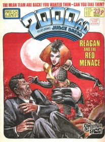

|
 | |
| Prog 521 by Barry Kitson | Prog 525 by Carlos Ezquerra | Prog 533 by John Higgins |
The 10th birthday Prog 520 came as a bit of a shock with a prog of different dimensions printed on higher quality paper and edited by a new Tharg (although that last wasn't obvious to the readers). This fresh start (although feeling quite punchy and new) contains all existing characters, and some of them are past their heyday. This begs the question of how 2000 AD will remain fresh as it continues through its eleventh year.
This stage ends with prog 534, which is sacred to the Prog 534 Club. Sick of hearing from those lauded Squaxx who'd been collecting since prog 1, they decided that anyone who owned prog 534 (but not prog 1) could join, with special Gold Membership reserved for anyone who'd taken a significant break from reading 2000 AD.
Anderson, Psi-Division: [Hour of the Wolf]
Whilst Anderson is a spin-off from the Dreddverse, here the student has become the master, with this tale easily overshadowing the main Dredd strip in terms of excitement, action and forward momentum. Re-introducing East-Meg agents (including the currently cubed Orlok) as threats, and borrowing Hershey, this sets the Judges and their system up as fallible again. (It suffers a bit from art issues: prog 528 sees pages printed out of order and then the final two and a bit episodes require a different artist.)
Despite this powerful showing, there's a 76-prog wait for the next Anderson story, beginning with Contact in prog 607...
Rogue Trooper: Hit One
Rogue is sent on his first assassination mission for his new alien masters (thus effectively eliminating the moral authority at the core of the character). Amusingly, his first target (a Nort General) has a throne with a statue of a pterodactyl on the back, set atop a dais and flanked by flaming braziers. This mixture of what seems like a medieval castle with a D&D villain and Rogue's hi-tech background is incongruous and the ten episodes struggle to solve the core morality issue: ultimately it's just too difficult to balance with the deliberate ambiguity of Rogue's new masters.
Wait 35 progs for Rogue to return in prog 567...
Judge Dredd
Following something of a pattern through recent stages, we start here with a real mixed bag, although 10 Years On (520), The Raggedy Man (525-526) and Simp (527) stand out in terms of high quality. There's a sense with something like "What if the Judges did the ads?" (521) that gimmicks and meta-humour have replaced story progression and world-building, itself a sign that perhaps the barrel is running dry at times.
Revolution (531-533) takes us back on track as a vital part of the democracy through-line. It's a direct follow-up to Letter From a Democrat in prog 460. Here, a peaceful protest march is deliberately stamped on by the Judges, as directed by the Chief Judge (Silver), who orders Dredd to break the law to achieve the required result. Dredd complies, and the Justice Department infiltrates the marchers with Wally Squad operatives who attack uniformed Judges and provide the excuse needed to violently suppress the march. Up to now, Dredd's clear focus has been attacking those who break the law, but here he's deliberately attacking citizens who have broken no law. We're left with Dredd clearly drifting from authoritarianism into fascism (although believing that ultimately his actions are best for the city), not as hero.
This is followed up by the one-episode Bug (with atmospheric art by Liam Sharp) which introduces the character of PJ Maybe (as a youth) and tells the story of his ingenious first murder. Having Maybe as a recurring character is clearly planned right from the start as the story states "This has been his first murder. It is far from being his last."
We see a strong uptick in quality for Dredd moving into the next stage...
Torquemada the God *SPIN-OFF*
Kevin's back on the illuminations, and he's not feeling well.Tap! Tap! Tap! As pointed out in A Potted History, this is really Nemesis the Warlock Book 6.5, forming a bridge between the escape of Torquemada from Nemesis at the end of Torquemurder and the upcoming Book VII. The idea of Torquemada as being a sequence of reincarnations of evil throughout human history was first mooted when Thoth started hunting them through the time wastes: here, the modern Torquemada is starting to rot as his prior incarnations are hunted down and executed.
There's a Nemesis one-off in prog 534 (see below), but really things kick off again properly with next stage's (Book VII) The Two Torquemadas...
Strontium Dog
Bitch continues for ten more episodes (on top of the fifteen from the previous stage) of Ronald Reagan dropping the soap in the shower with Johnny Alpha and saying "goshdarned" and "ulp" a lot.
Read across 25(!) weeks I cannot imagine how it must have dragged, but read in one go, it fair zips along, and only gets noticeably decompressed towards the end, with everybody hiding in the jungle. And it very much feels like the last part of Johnny's post-Wulf rehabilitation. Red constantly needles and annoys him, refusing to take him as seriously as he takes himself - and by the end, he's smiling again, joking, shooting Reagan with a catapult. She's the distraction he never knew he needed.
Bitch is followed up by the Royal Affair (where King Clarkie falls in love with mutant Vera Duckworth) as Strontium Dog meets Coronation Street by way of Edward VIII's actual factual historical abdication.
The Royal Affair continues in the next stage...
Tharg's Future Shocks
With a Bang in prog 522 features Simon Harrison's first art in the prog. We also get His Name Was Janus (a bold visual experiment), Old Quagmires Never Die, Fair's Fare and Someone is Watching Me.
Prog 533's Alter-Nators introduces the character of Bradley (a troublesome alien child), who breaks out into his own sequence of one-offs starting in prog 545.
More in the next stage...
Tales From Mega-City One *SPIN-OFF*
A new format that provides a one-page Tale without necessarily needing to involve Dredd (but he usually turns up anyway). We get Wreckers, [Marital Disputes], Quarantine, the two-part Taxi Driver and [Fire!]. Taxi Driver breaks the rules (that these are one-pagers) by jumping in with a fourteen-pager.
One more in the next stage...
Mean Team
"They're back!" declares the tagline, after a break of only *cough* 78 progs. The story of a violent future sport team led by mericiless killer Bad Jack Keller [clue: name] ditches the sport and instead strands them on an odd Earth where technology doesn't function (which did for unfortunately robotic teammate Steelgrip last time) and everyone else seems to have teleported in from a Grimm's Fairy Tale.
It turns out that Keller is completely immune to damage whilst on Earth. When Bad Jack was figuring out that Emerald Eyes was his sister, and probably also immune, he tested the theory by shooting her in the back with a crossbow. He also wears a codpiece replica of his team mate's face:

More (yes, more) in the next stage...
D.R. & Quinch's Incredibly Excruciating Agony Page *SPIN-OFF*
A one-page, back cover, full color, surreal agony aunt forum in comic strip form. It's nice to see drawings of the characters again, but as this is sans Alan Moore, it's not really them, is it? This bold experiment in reader-driven comic narrative ends here with the ninth episode.
The final Agony Page in prog 534 states that they'll "return to 2000 AD after some, like suitable treatmant, man." The treatment took 31 years and we don't see them again until the 2018 FCBD issue (and, of course, still not by Moore)...
Nemesis the Warlock
The one-off Bedtime Story in prog 534 is a photo-story with some fairly inept Nemesis and Torquemada costumes (by modern cosplay standards) in which Nemesis takes the time to cure Candida of her madness. There's also Torquemada's Second Honeymoon, a short flashback in the 1988 2000 AD Annual, with art from Kevin O'Neill.
Coming up next stage we get two books: The Two Torquemadas & Purity's Story...
The posters of 2000 AD characters started getting called Star Pin-Ups in prog 74's rendition of Artie Gruber. This labeling got replaced with the sobriquet "Star Scan" in prog 531 with a depiction of Dredd with what we'd recognise as a Judge's wig.